Strands OmniVoice¶
Give your agent a voice — in 600+ languages, with zero training data.

600+Languages
13Tools
3Voice modes
0.025RTF
Hear it ▶¶
One click on any sample below to play. All audio was generated by strands-omnivoice itself — code lives next to each card.
Auto voice — the simplest path¶
from strands_omnivoice import omnivoice_tts
omnivoice_tts(
text="Hello world, welcome to Strands OmniVoice.",
output="/tmp/hello.wav",
)
Voice design — describe the speaker¶
from strands_omnivoice import omnivoice_design
omnivoice_design(
text="Once upon a time, in a land far far away.",
instruct="female, elderly, low pitch, british accent",
output="/tmp/story.wav",
)
Voice cloning — clone any speaker¶
from strands_omnivoice import omnivoice_clone
omnivoice_clone(
text="This is the cloned voice speaking different words.",
ref_audio="/tmp/hello.wav", # → reference clip
output="/tmp/cloned.wav",
)
Multilingual — same code, any language¶
Inline tags — [laughter] [sigh] and more¶
What you get¶
600+ languages¶
The broadest zero-shot TTS coverage available. Same omnivoice_tts call, any language.
Voice cloning¶
Clone any speaker from a 3–10s reference clip. Whisper-powered auto-transcription.
Voice design¶
Describe the speaker via attributes — gender, age, pitch, accent, dialect, whisper.
Fast on-device¶
RTF as low as 0.025. Apple Silicon (MPS), CUDA, and CPU all auto-detected.
Tools at a glance¶
| Family | Tools |
|---|---|
| Synthesis | omnivoice_tts · omnivoice_clone · omnivoice_design · omnivoice_batch |
| ASR | omnivoice_transcribe |
| Lifecycle | omnivoice_load_model · unload · download |
| Info | omnivoice_sysinfo · omnivoice_list_languages |
| Audio | audio_probe · audio_play |
| Web UI | omnivoice_demo_serve |
→ Continue with Installation · Quickstart · API Reference